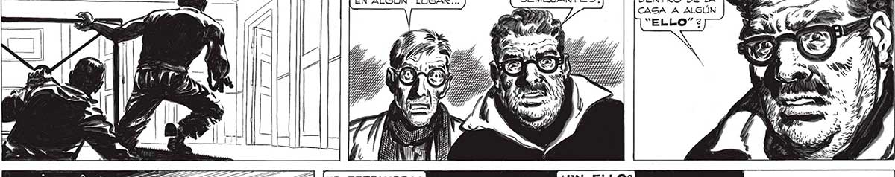
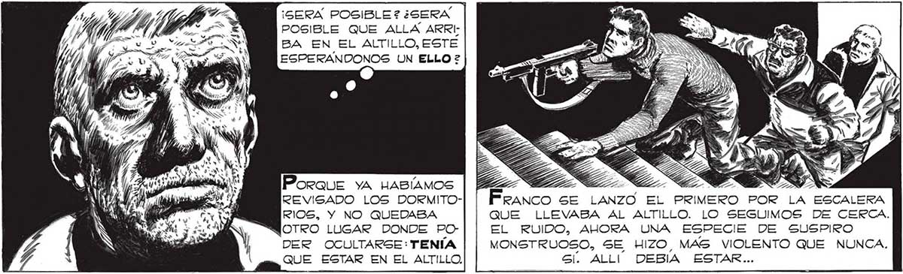

ELLOS..ELLOS.. ¡SERA POSIBLE QUE TENGAMOS DENTRO DE LA CAGA A ALGÚN “ELLO” 2 (IMPOSIBLE, MOSCA! “TAMPOCO A ELLOS LES OIMOS RUIDOS GE ¿NO SE HABRA METIDO ALGÚN “MANO”2 ESTARÁ ESCONDIDO EN ALGÚN LUGAR... ig e e ¡AQUÍ NO HAY NADA! DÍ j Y S AU NO PERDAMOS LA CABEZA... QUIZA TENGAMOS QUE VERNOS CON UN — LEA COMO Sl ARRASTRARAN ALGO. GOLPES VIOLENTOS, EN SEGUIDA. LA CASA ENTERA FPARECIA LLENA DEL TREMENDO FRAGOR. Sent COMO Gi ALGO HELADO ME ENVOLVIERA EL CORAZON... ¡SERÁ POSIBLE? ¿SERA POSIBLE QUE ALLA ARRIBA EN EL ALTILLO, ESTE ESPERANDONOS UN ELLO ? ri Franco se LANZO EL PRIMERO POR LA ESCALERA QUE LLEVABA AL ALTILLO. LO SEGUIMOS DE CERCA. EL RUIDO, AHORA UNA ESPECIE DE SUSPIRO MONSTRUOSO, SE HIZO, MAS VIOLENTO QUE NUNCA. Poraue yA HABÍAMOS REVISADO LOS DORMITORIOS, Y NO QUEDABA WOTRO LUGAR DONDE PODER OCULTARSE: TENÍA QUE ESTAR EN EL ALTILLO. Gl. ALLI! DEBIA ESTAR... Hasísmos LUCHADO CONTRA LOS “CAGCARUDOS”, CONTRA LOS 'GURBOS”, CONTRA LOS "HOMBRES-ROBOTS”, CON: TRA LOS “MANOS... CA" DA VEZ HABIAMOS TRO-: PEZADO CON UN ENEMIGO MAS EXTRAÑO, MAS FORMIDABLE... Y SABÍAMOS QUE TODOS NO ERAN MAS QUE JUGUETES EN MANOS DE LOS ELLOS... LOS ELLOS, LOS VERDADEROS INVASORES, LOS DIRECTORES DE TODO.. De Pronto NOS SOBRECOGIO UNA SENSACIÓN DE GRAN PELIGRO. FRANCO, EN CAMBIO SUBÍA TEMERARIAMENTE... 315

